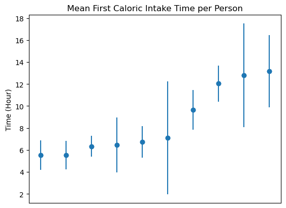
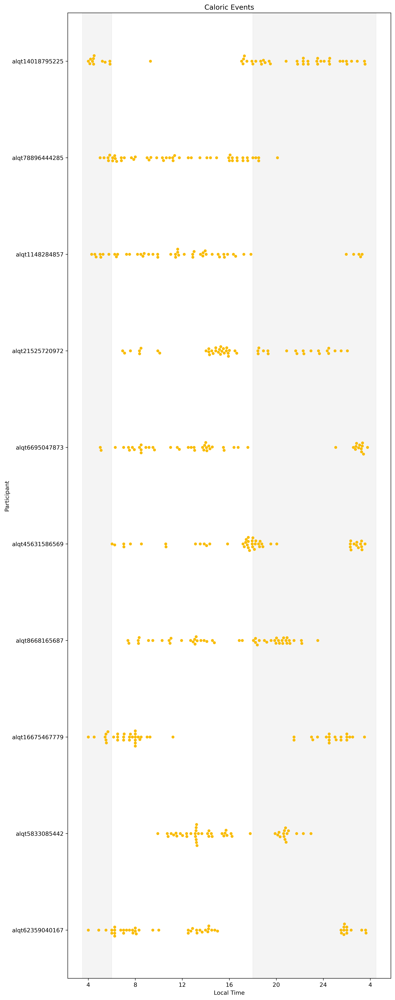

import treets.core as treets
import pandas as pd
import numpy as npTREETS
Time Restricted Eating ExperimenTS.
Install
pip install treets
Data Required and Used By TREETS
Caloric Entry Logging
Logging data typically comes from the myCircadianClock application. TREETS functionality relies on columns that are found in these datasets, and therefore it is important that logging data fed into TREETS uses this format. Column names, such as ‘food_type’ and ‘desc_text’, are expected to match what is created by data from this app.
A single logging entry consists of all logged food/beverage/medication items logged by a single participant at a specific moment. The app allows users to retroactively log items, and instructs them to label the entire log with a single ‘food type’ that best fits the contents of the log.
treets.file_loader('data/col_test_data/yrt*').head(2)| original_logtime | desc_text | food_type | PID | |
|---|---|---|---|---|
| 0 | 2021-05-12 02:30:00 +0000 | Milk | b | yrt1999 |
| 1 | 2021-05-12 02:45:00 +0000 | Some Medication | m | yrt1999 |
‘Long Form’ Participant Information Sheets
To ensure that analysis is properly matched to specific participants and/or study phases, it is crucial that all particpant data used with TREETS follows the exact format specified in this HOWTO document.
Participant information data should follow the HOWTO document that accompanies TREETS. A short recap of some of the most important points is provided here:
Columns should be in the exact specified order (exact column names are less important than the column order).
Date columns must be provided in ISO 8601
Participants with rows that are missing data are not included in analysis. See the HOWTO document for more information.
Study Phase and Intervention Group Names should be consistent for the same group (e.g. TRE and tre would be treated as two separate study groups)
The number of intervention groups and study phases is not important, so long as other information is sensible (e.g. starting and ending periods for these phases do not accidentally overlap)
pd.read_excel('data/col_test_data/toy_data_17May2021.xlsx').head(2)| mCC_ID | Participant_Study_ID | Study Phase | Intervention group (TRE or HABIT) | Start_Day | End_day | Eating_Window_Start | Eating_Window_End | |
|---|---|---|---|---|---|---|---|---|
| 0 | yrt1999 | 2 | S-REM | TRE | 2021-05-12 00:00:00 | 2021-05-14 00:00:00 | 00:00:00 | 23:59:00 |
| 1 | yrt1999 | 2 | T3-INT | TRE | 2021-05-15 00:00:00 | 2021-05-18 00:00:00 | 08:00:00 | 18:00:00 |
Single Arm/Treatment Group Studies
TREETs assumes studies have multiple treatment groups. For studies where there is a single treatment group, please ensure that all participants still have a labeled group name of some kind within the required Long Form spreadsheet (missing values or values marked as ‘N/A’ are ignored).
example = pd.read_excel('data/col_test_data/toy_data_17May2021.xlsx').rename(columns={'Intervention group (TRE or HABIT)': 'Intervention Group'})
example['Intervention Group'] = np.nan
example| mCC_ID | Participant_Study_ID | Study Phase | Intervention Group | Start_Day | End_day | Eating_Window_Start | Eating_Window_End | |
|---|---|---|---|---|---|---|---|---|
| 0 | yrt1999 | 2 | S-REM | NaN | 2021-05-12 00:00:00 | 2021-05-14 00:00:00 | 00:00:00 | 23:59:00 |
| 1 | yrt1999 | 2 | T3-INT | NaN | 2021-05-15 00:00:00 | 2021-05-18 00:00:00 | 08:00:00 | 18:00:00 |
| 2 | yrt2000 | 3 | T3-INT | NaN | 2021-05-12 00:00:00 | 2021-05-14 00:00:00 | 08:00:00 | 16:00:00 |
| 3 | yrt2000 | 3 | T3-INT | NaN | 2021-05-15 00:00:00 | 2021-05-18 00:00:00 | 08:00:00 | 16:00:00 |
| 4 | yrt2001 | 4 | T12-A | NaN | NaT | NaT | NaN | NaN |
In this example, all participants are from the same Intervention Group. Missing, null, or N/A values are typically ignored by TREETs under the assumption that all variables with existing values are critical to analysis. If your study has only a single arm, please still note the Intervention Group as a value of some kind (such as ‘None’) as shown below.
example['Intervention Group'] = 'None'
example| mCC_ID | Participant_Study_ID | Study Phase | Intervention Group | Start_Day | End_day | Eating_Window_Start | Eating_Window_End | |
|---|---|---|---|---|---|---|---|---|
| 0 | yrt1999 | 2 | S-REM | None | 2021-05-12 00:00:00 | 2021-05-14 00:00:00 | 00:00:00 | 23:59:00 |
| 1 | yrt1999 | 2 | T3-INT | None | 2021-05-15 00:00:00 | 2021-05-18 00:00:00 | 08:00:00 | 18:00:00 |
| 2 | yrt2000 | 3 | T3-INT | None | 2021-05-12 00:00:00 | 2021-05-14 00:00:00 | 08:00:00 | 16:00:00 |
| 3 | yrt2000 | 3 | T3-INT | None | 2021-05-15 00:00:00 | 2021-05-18 00:00:00 | 08:00:00 | 16:00:00 |
| 4 | yrt2001 | 4 | T12-A | None | NaT | NaT | NaN | NaN |
Phased Study Example
TREETS comes with a summary analysis function built specifically for phased studies. By default, it prints a report outlining dates where participants were missing logs or where non-adherent to their current assigned eating window for that date.
df = treets.summarize_data_with_experiment_phases(treets.file_loader('data/col_test_data/yrt*')\
, pd.read_excel('data/col_test_data/toy_data_17May2021.xlsx'))Participant yrt1999 didn't log any food items in the following day(s):
2021-05-18
Participant yrt2000 didn't log any food items in the following day(s):
2021-05-12
2021-05-13
2021-05-14
2021-05-15
2021-05-16
2021-05-17
2021-05-18
Participant yrt1999 have bad logging day(s) in the following day(s):
2021-05-12
2021-05-15
Participant yrt1999 have bad window day(s) in the following day(s):
2021-05-15
Participant yrt1999 have non adherent day(s) in the following day(s):
2021-05-12
2021-05-15df| mCC_ID | Participant_Study_ID | Study Phase | Intervention group (TRE or HABIT) | Start_Day | End_day | Eating_Window_Start | Eating_Window_End | phase_duration | caloric_entries_num | ... | logging_day_counts | %_logging_day_counts | good_logging_days | %_good_logging_days | good_window_days | %_good_window_days | outside_window_days | %_outside_window_days | adherent_days | %_adherent_days | |
|---|---|---|---|---|---|---|---|---|---|---|---|---|---|---|---|---|---|---|---|---|---|
| 0 | yrt1999 | 2 | S-REM | TRE | 2021-05-12 | 2021-05-14 | 00:00:00 | 23:59:00 | 3 days 00:00:00 | 7 | ... | 3 | 100.0 | 0.0 | 0.0 | 1.0 | 33.33 | 0.0 | 0.0 | 0.0 | 0.0 |
| 1 | yrt1999 | 2 | T3-INT | TRE | 2021-05-15 | 2021-05-18 | 08:00:00 | 18:00:00 | 4 days 00:00:00 | 8 | ... | 3 | 75.0 | 0.0 | 0.0 | 0.0 | 0.00 | 1.0 | 25.0 | 0.0 | 0.0 |
| 2 | yrt2000 | 3 | T3-INT | TRE | 2021-05-12 | 2021-05-14 | 08:00:00 | 16:00:00 | 3 days 00:00:00 | 0 | ... | 0 | 0.0 | 0.0 | 0.0 | 0.0 | 0.00 | 0.0 | 0.0 | 0.0 | 0.0 |
| 3 | yrt2000 | 3 | T3-INT | TRE | 2021-05-15 | 2021-05-18 | 08:00:00 | 16:00:00 | 4 days 00:00:00 | 0 | ... | 0 | 0.0 | 0.0 | 0.0 | 0.0 | 0.00 | 0.0 | 0.0 | 0.0 | 0.0 |
| 4 | yrt2001 | 4 | T12-A | TRE | NaT | NaT | NaN | NaN | NaT | 0 | ... | 0 | NaN | NaN | NaN | NaN | NaN | NaN | NaN | NaN | NaN |
5 rows × 36 columns
Each row in the resulting dataframe represents summary data for a participant during a specific study phase and assigned eating window combination. If a participant has had more than one assigned eating window during a study phase, each eating window will receive a summary row that describes the data for the duration of the assignment.
Additionally, the majority of statistical information here is contingent on the participant having enough data to generate valid statistics. Daily averages and standard deviation measurements require participants to have a minimum number of logs on each day and a minimum number of days logged (e.g. standard deviation of first caloric entry would be incalculable if the participant only has a single caloric entry for that study phase in the dataset). Similarly, eating window calculations and percentiles are only available if a participant has a valid eating window (e.g. days with only a single caloric log do not produce a valid eating window).
df.iloc[0]mCC_ID yrt1999
Participant_Study_ID 2
Study Phase S-REM
Intervention group (TRE or HABIT) TRE
Start_Day 2021-05-12
End_day 2021-05-14
Eating_Window_Start 00:00:00
Eating_Window_End 23:59:00
phase_duration 3 days 00:00:00
caloric_entries_num 7
medication_num 0
water_num 0
first_cal_avg 5.916667
first_cal_std 2.240722
last_cal_avg 19.666667
last_cal_std 12.933323
mean_daily_eating_window 13.75
std_daily_eating_window 11.986972
earliest_entry 4.5
mean_daily_eating_occasions 2.333333
std_daily_eating_occasions 1.527525
mean_daily_eating_midpoint 12.083333
std_daily_eating_midpoint 6.355772
2.5% 4.75
97.5% 4.75
duration mid 95% 0.0
logging_day_counts 3
%_logging_day_counts 100.0
good_logging_days 0.0
%_good_logging_days 0.0
good_window_days 1.0
%_good_window_days 33.33
outside_window_days 0.0
%_outside_window_days 0.0
adherent_days 0.0
%_adherent_days 0.0
Name: 0, dtype: objectNon-Phased Summaries
TREETs also houses a function made to summarize participant data for an entire study.
df = treets.file_loader('data/test_food_details.csv')
df.head(2)| ID | unique_code | research_info_id | desc_text | food_type | original_logtime | foodimage_file_name | |
|---|---|---|---|---|---|---|---|
| 0 | 7572733 | alqt14018795225 | 150 | Water | w | 2017-12-08 17:30:00+00:00 | NaN |
| 1 | 411111 | alqt14018795225 | 150 | Coffee White | b | 2017-12-09 00:01:00+00:00 | NaN |
TREETS makes use of more specific time-based identifiers to help group data. For their specific use cases, please refer to the API.
df = treets.load_food_data(df, h = 4)
df.head(2)| ID | unique_code | research_info_id | desc_text | food_type | original_logtime | date | float_time | time | week_from_start | year | |
|---|---|---|---|---|---|---|---|---|---|---|---|
| 0 | 7572733 | alqt14018795225 | 150 | Water | w | 2017-12-08 17:30:00+00:00 | 2017-12-08 | 17.500000 | 17:30:00 | 1 | 2017 |
| 1 | 411111 | alqt14018795225 | 150 | Coffee White | b | 2017-12-09 00:01:00+00:00 | 2017-12-08 | 24.016667 | 00:01:00 | 1 | 2017 |
df = treets.summarize_data(df)
df.head(2)| unique_code | num_days | num_total_items | num_f_n_b | num_medications | num_water | first_cal_avg | first_cal_std | last_cal_avg | last_cal_std | eating_win_avg | eating_win_std | good_logging_count | first_cal variation (90%-10%) | last_cal variation (90%-10%) | 2.5% | 95% | duration mid 95% | |
|---|---|---|---|---|---|---|---|---|---|---|---|---|---|---|---|---|---|---|
| 0 | alqt1148284857 | 13 | 149 | 96 | 19 | 34 | 7.821795 | 6.710717 | 23.485897 | 4.869082 | 15.664103 | 8.231201 | 146 | 2.750 | 10.050 | 4.593750 | 27.129167 | 22.589583 |
| 1 | alqt14018795225 | 64 | 488 | 484 | 3 | 1 | 7.525781 | 5.434563 | 25.858594 | 3.374839 | 18.332813 | 6.603913 | 484 | 13.195 | 3.105 | 4.183333 | 27.445000 | 23.416667 |
df.iloc[0]unique_code alqt1148284857
num_days 13
num_total_items 149
num_f_n_b 96
num_medications 19
num_water 34
first_cal_avg 7.821795
first_cal_std 6.710717
last_cal_avg 23.485897
last_cal_std 4.869082
eating_win_avg 15.664103
eating_win_std 8.231201
good_logging_count 146
first_cal variation (90%-10%) 2.75
last_cal variation (90%-10%) 10.05
2.5% 4.59375
95% 27.129167
duration mid 95% 22.589583
Name: 0, dtype: objectLog Cleaning and Parsing
An additional feature that comes with TREETS is ‘food log’ cleaning and parsing. Using a dictionary of common mispellings (and their corrections), TREETS attempts to spell correct typos made in food logs. Food logs are then n-gram matched through a dictionary of n-gram food and medication related phrases to create a list of individual items.
# import the dataset
df = treets.file_loader('data/col_test_data/yrt*')
df.head(3)| original_logtime | desc_text | food_type | PID | |
|---|---|---|---|---|
| 0 | 2021-05-12 02:30:00 +0000 | Milk | b | yrt1999 |
| 1 | 2021-05-12 02:45:00 +0000 | Some Medication | m | yrt1999 |
| 2 | 2021-05-12 04:45:00 +0000 | bacon egg | f | yrt1999 |
treets.clean_loggings(df).head(3)| desc_text | cleaned | |
|---|---|---|
| 0 | Milk | [milk] |
| 1 | Some Medication | [medication] |
| 2 | bacon egg | [bacon, egg] |
Visualizations
TREETS includes a small suite of visualizations. Some examples are included below.
# import the dataset
df = treets.file_loader('data/test_food_details.csv')
df.head(2)| ID | unique_code | research_info_id | desc_text | food_type | original_logtime | foodimage_file_name | |
|---|---|---|---|---|---|---|---|
| 0 | 7572733 | alqt14018795225 | 150 | Water | w | 2017-12-08 17:30:00+00:00 | NaN |
| 1 | 411111 | alqt14018795225 | 150 | Coffee White | b | 2017-12-09 00:01:00+00:00 | NaN |
A scatter plot for people’s breakfast time
# create required features for function first_cal_mean_with_error_bar()
df['original_logtime'] = pd.to_datetime(df['original_logtime'])
df['local_time'] = treets.find_float_time(df, h = 4)
df['date'] = treets.find_date(df, h = 4)
# call the function
treets.first_cal_mean_with_error_bar(df)
Use swarmplot to visualize each person’s eating time distribution.
treets.swarmplot(df, max_loggings = 50)